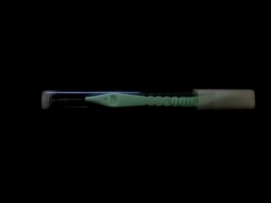
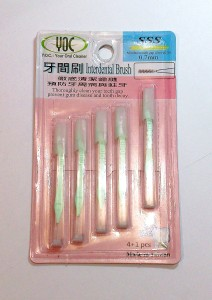
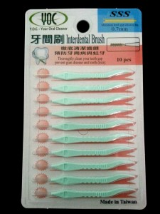
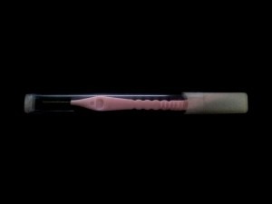

正體中文
正體中文 Español
EspañolYOC
Since 2012, we launched to develop our “YOC” brand oral hygiene products including-Dental Stick, Inter Dental Brush, and Dental Floss. Our 4S Inter Dental Brush interdental brush obtained the smallest specification on market and got patent certification. Our “YOC” brand 4S Inter Dental Brush can pass 0.6mm diameter minimum, and efficient to clean remain residue on teeth, prevent forming periodontal disease. Also adapted to new user and children with smaller teeth gap, to be daily essential supplies to clean orthodontics (braces), fitted dentures (fixed). The production material is used fine Japanese stainless steel, DuPont Nylon bristles and adopted ultraviolet disinfection during production process with providing the best quality service.

1. Super flexible wire, not falling and broken.
2. Adopt fine Nylon bristles to clean teeth gap in penetration, children applicable.
3. Flat handle design for easy gripping and cleaning.
4. Thoroughly clean teeth gap, prevent periodontal disease and tooth decay.
5. Disposable design in bacteriostatic.
Material:
Bristle: DuPont Nylon
Handle: PP Wire: Japan stainless steel
Temperature (bristle): 80 ゜ C
Package: 10pcs/blister card/color box/outer carton
Color: blue/pink/green or as customized
 ITEM NO.: LWY-A001 dental stick
ITEM NO.: LWY-A001 dental stick
 ITEM NO.: LWY-B3S01 interdental brush
ITEM NO.: LWY-B3S01 interdental brush
ITEM NO.: LWY-B3S02 interdental brush with tube
{kind=link}
ITEM NO.: LWY-B3S04 interdental brush with tube
{kind=link}
ITEM NO.: LWY-B3S05 interdental brush with blister card
{kind=link}
 ITEM NO.: LWY-B4S01 interdental brush
ITEM NO.: LWY-B4S01 interdental brush
ITEM NO.: LWY-B4S02 interdental brush with tube
{kind=link}
 ITEM NO.: LWY-B4S04 interdental brush with tube
ITEM NO.: LWY-B4S04 interdental brush with tube
 ITEM NO.: LWY-B4S05 interdental brush with blister card
ITEM NO.: LWY-B4S05 interdental brush with blister card
 ITEM NO.: LWY-C001 dental flosspick
ITEM NO.: LWY-C001 dental flosspick